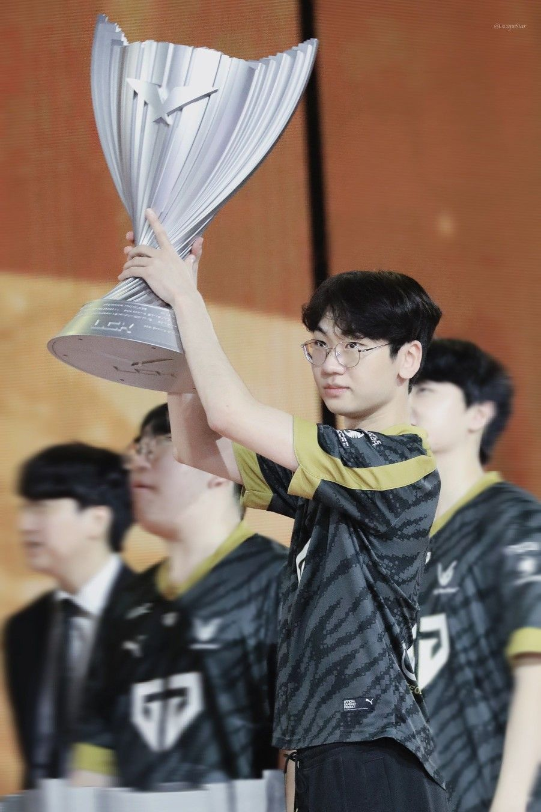
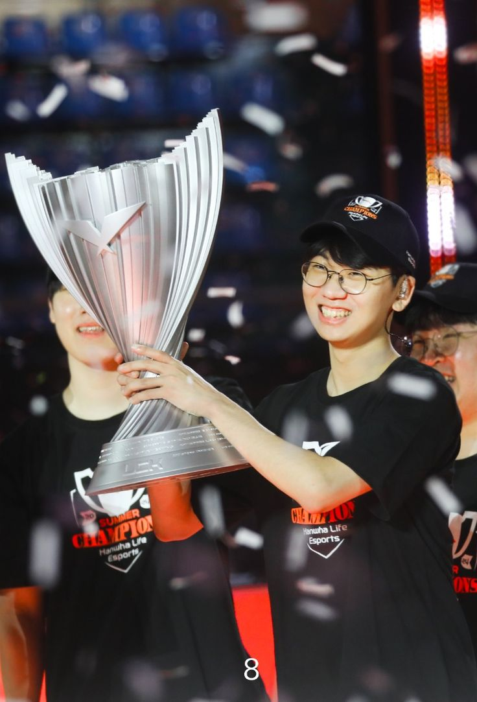

Doran holds an impressive collection of domestic titles in the League of Legends Champions Korea (LCK). During his tenure with Gen.G, he achieved a historic "three-peat" by winning the LCK Summer 2022, Spring 2023, and Summer 2023 titles consecutively.
In 2024, representing Hanwha Life Esports (HLE), Doran delivered a monumental performance in the LCK Summer 2024 finals in Gyeongju, defeating Gen.G 3-2 to secure his fourth career LCK championship trophy.

